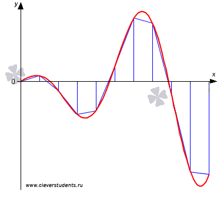

Суть метода трапеций заключается в следующем: отрезок интегрирования разбивается на несколько промежуточных отрезков, и график подынтегральной функции приближается ломаной линией.

Таким образом, площадь приближается суммой площадей трапеций. Отсюда и название метода. Метод трапеций даёт значительно лучшее приближение, чем метод прямоугольников (при одинаковом количестве отрезков разбиения). Чем больше более мелких промежуточных отрезков мы рассмотрим, тем выше будет точность.